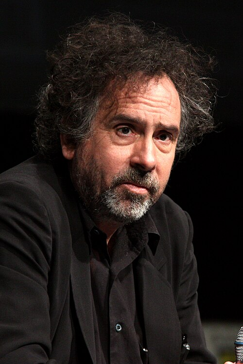
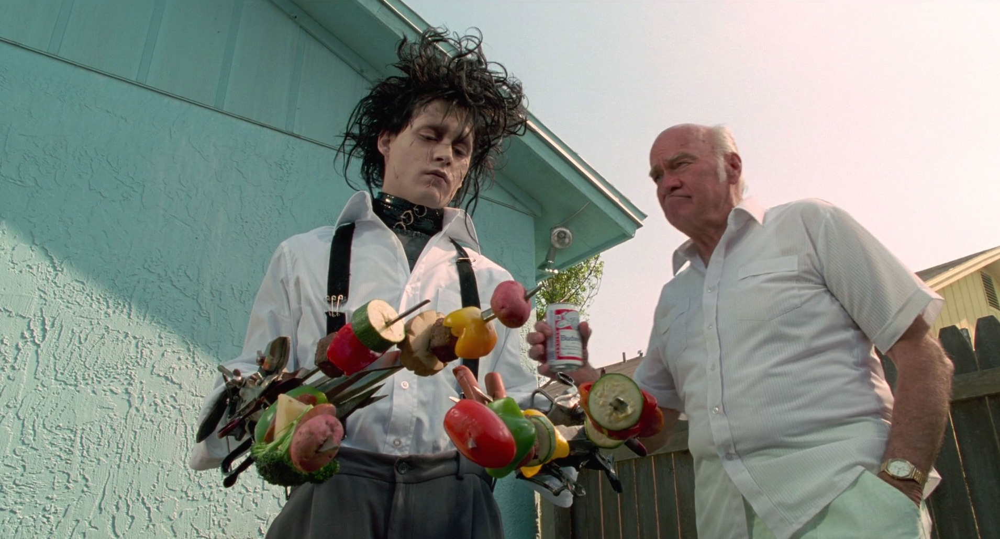
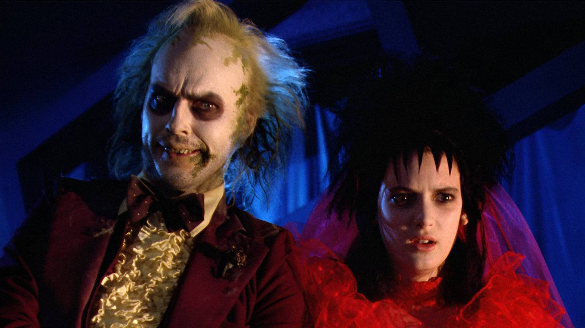
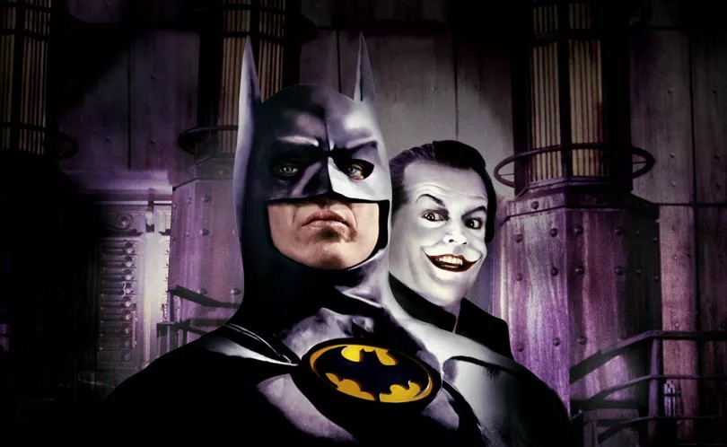
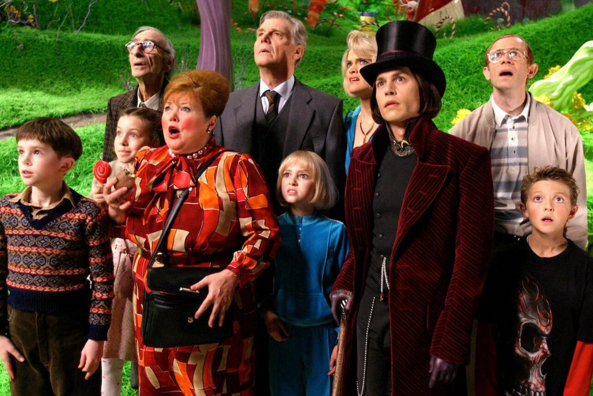
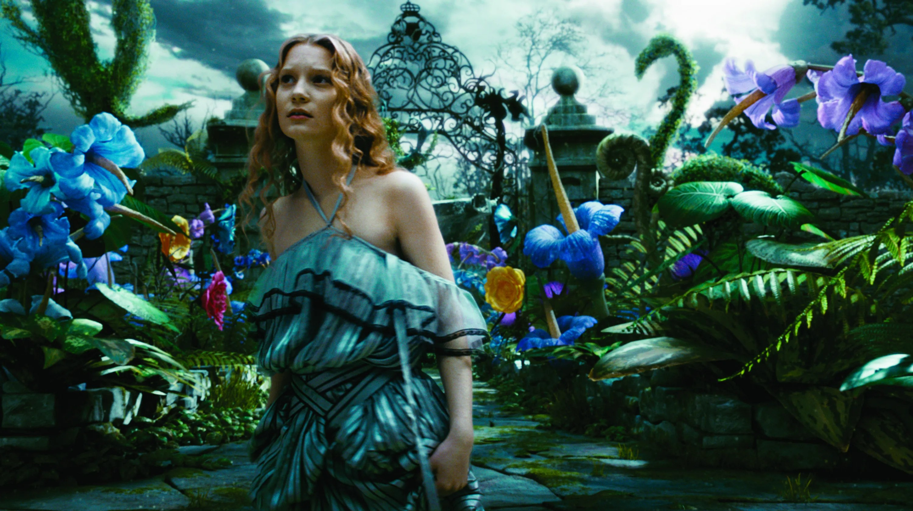
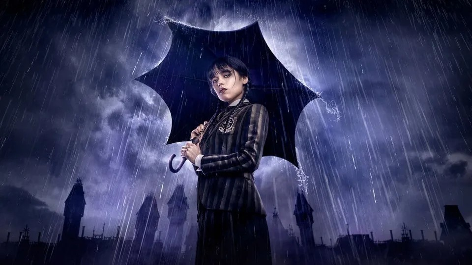

Тим Бёртон
25.08.1958
Бёрбанк, США
Тим Бертон родился в 1958 году в Калифорнии в семье бывшего бейсболиста и владелицы сувенирного магазина.
Замкнутый подросток, он находил убежище в рисовании и старых фильмах ужасов.
Бертон был женат на художнице Лине Гиз (мать его дочери), затем встречался с актрисой Хеленой Бонем Картер, с которой у него двое детей.
Сейчас его спутница — Моника Беллуччи.
Бёртон — король «готического сюрреализма» в Голливуде.
Его почерк: бледные лица с огромными глазами, контраст чёрного и ярких цветов (например, полоски),
«кривые» деформированные пейзажи и сочувствие героям-чудакам и изгоям.
Любимые жанры: мрачная сказка, чёрная комедия ужасов, фэнтези и анимация (в том числе кукольная).
Известные фильмы

Эдвард Руки-ножницы
1990 год

Битлджус
1988 год

Бэтмен
1989 год

Чарли и шоколадная фабрика
2005 год

Алиса в Стране чудес
2010 год

Уэнздей
2022 год
Награды

Премия «Золотой глобус»
1 номинация

Премия «Оскар»
2 номинации

Каннский кинофестиваль
1 номинация